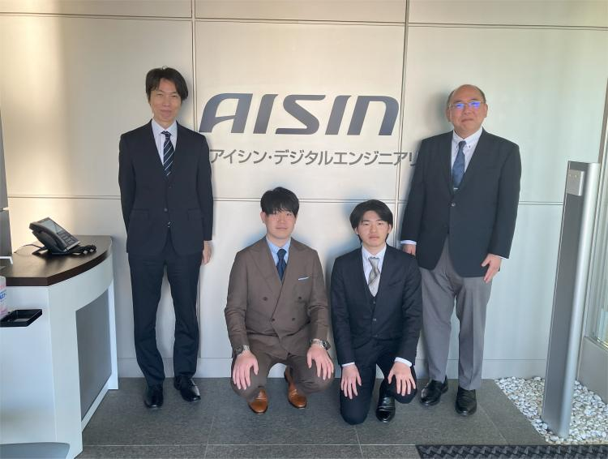

TOPICS


2026年3月23日
報告：柴原正和 教授、武本幸生 特任准教授、前田新太郎 特任助教、B4 井上正貴 さんが、株式会社アイシン・デジタルエンジニアリング を訪問しました。


2025年9月9日
報告：柴原研究室 Ramy 特任准教授が、 Journal of Pipeline Science and Engineering の青年編集委員に選出されましたので報告致します。

2025年8月28日
論文：溶接学会論文集に投稿していた14本の論文が本年7月に採択されました。今回は、その中から【AI線状加熱およびデジタルツインに関する研究】に関する5本の論文をご紹介いたします。


研究室の魅力
誰も解くことのできなかった、製造上の問題を解決に導く、製造革新を起こすことを目指します。
そのために、多くの企業と共同研究を行うことで、研究をサポートしています。
研究室で開発された「理想化陽解法FEM」という超高速解析手法は、世界でもトップクラスの計算性能・計算速度を有しており、
現在は、約30社の大手企業の方々に使われている解析技術です。
主な研究内容
モノづくり問題や構造問題を解くために必要な、シミュレーションツールの開発を行っています。
船の製造に欠かせない、ガスバーナーを用いた板曲げ加工技術がありますが、
柴原研究室ではロボットを駆使しつつAIを用いて、任意の形状を自動的に作成するような技術にまで性能を高めています。
この方法は、船の製造方法を画期的に変える可能性があると考えています。
我々はこの技術をさらに発展させ、どのような曲がった板でも、真っ直ぐに戻す技術、いわゆる”ひずみ取り”技術にまで応用させ、
学生たちと共に国際特許を申請しつつ企業の方と実用化に向けて取り組んでいるところです。
溶接により生じる物体内部の力を考慮した高精度な破壊解析、あるいは船が折れるかどうかの座屈解析なども行っております。